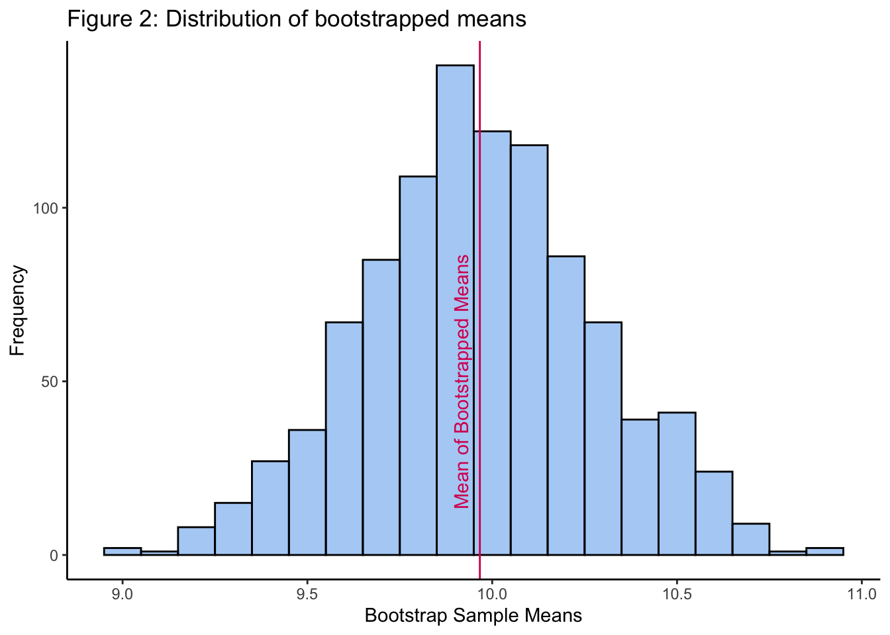

library(boot) # bootstrappinglibrary(broom) # lm modellibrary(correlation) # get different correlationslibrary(data.table) # fread library(datawizard) # for winsorising functionlibrary(easystats) # model_paramters functionlibrary(infer) # sample_rep_n functionlibrary(palmerpenguins) # penguins datasetlibrary(parameters) # SElibrary(performance) # check assumptionslibrary(permuco) # run permutation testslibrary(robustbase) # star datalibrary(simpleboot)library(sciplot) # for lineplot.CIlibrary(tidyverse)
Robust Correlations
Use the stars data in robustbase. This data looks at the relationship between temperature at the surface of a star and the light intensity.
Code
# load in datastars <- robustbase::starsCYG
a. Plot the data and describe the pattern seen. What is Pearson’s r?
Ans: From the plot, it looks like there is a positive correlation between light intensity and temperature (axes are log-transformed). However, a Pearson’s correlation test reveals no significant correlation (Pearson’s r = -0.21 (95% CI = [-0.47, 0.08]), p = 0.156).
Code
# Pearson's r using easystats packagecorrelation::correlation(stars)
b. Re-run the correlation, but this time use the winsorized r (20%). Do this manually and then with the correlation::correlation function from easystats.
Code
# winsorise manually + run correlation again (`datawizard` + `correlation`)winsorized_stars <- datawizard::winsorize(stars,threshold =0.2,method ="percentile",robus =FALSE,verbose =TRUE)correlation(winsorized_stars)
Ans: The correlations between light intensity and temperature became significant after winsorising the stars dataset. (Winsorising and then running the correlation resulted in the same outputs as running the correlation with a winsorising argument in one step.) After winsorising, Pearson’s r = 0.34 (95% CI=[0.06, 0.57]), p = 0.018.
Bootstrapping and Permutations
For the following data: [8.453532, 10.025041, 11.495339, 9.367600, 8.333229, 9.788753, 10.883344, 10.543059, 9.869095, 10.799819]
a. Bootstrap the mean (using the boot package) and plot the histogram with ggplot2
# method 2: Using `boot` package# define the function that will be used to calculate the meanmean_func =function(data, indices) {return(mean(data[indices])) #indices to do bootstrapping}# use boot to bootstrap means 1000 timesboot_list_results <-boot(sample_list, mean_func, R=1000)# get meansboot_list_means <- boot_list_results$t# plot histogram with ggplotp <-ggplot(as.data.frame(boot_list_means), aes(x = V1)) +geom_histogram(binwidth =0.1, color ="black", fill ="#1E88E5", # color-blind friendlyalpha =0.4) +labs(title="Figure 2: Distribution of bootstrapped means",y="Frequency",x="Bootstrap Sample Means") +theme_classic()# add vlinevline <-mean(boot_list_means)p +geom_vline(xintercept = vline,color ="#D81B60") +# color-blind friendlyannotate("text", x=vline-0.05, y=50,color ="#D81B60",label="Mean of Bootstrapped Means", angle=90)

b. Bootstrap the median (using the boot package) and plot the histogram with ggplot2
Code
# define function to calculate the medianmedian_func =function(data, indices) {return(median(data[indices])) #indices to do bootstrapping}# set seedset.seed(8)# use boot to bootstrap medians 1000 timesboot_list_median_results <-boot(sample_list, median_func, R=1000)# get mediansboot_list_medians <- boot_list_median_results$t# plot histogram with ggplotp <-ggplot(as.data.frame(boot_list_medians), aes(x = V1)) +geom_histogram(binwidth =0.1, color ="black", fill ="#D81B60", # color-blind friendlyalpha =0.4) +labs(title="Figure 3: Distribution of bootstrapped medians",y="Frequency",x="Bootstrap Sample Medians") +theme_classic()# add vlinevline <-median(boot_list_medians)p +geom_vline(xintercept = vline,color ="#D81B60") +annotate("text", x=vline-0.05, y=100,color ="black",label="Median of Bootstrapped Medians", angle=90)
c. For the mean bootstraps, plot the 95% confidence intervals (percentile and bca) along with the mean. Use geom_vline annotate to mark the lines noting what they represent.
Code
# boot_means_ci_perc <-boot.ci(boot_list_results, type ="perc", R=1000)boot_means_ci_bca <-boot.ci(boot_list_results, type ="bca", R=1000)# plot histogram with ggplotp <-ggplot(as.data.frame(boot_list_means), aes(x = V1)) +geom_histogram(binwidth =0.1, color ="black", fill ="#1E88E5", # color-blind friendlyalpha =0.4) +labs(title="Figure 4: Distribution of bootstrapped means with 95% and BCA CI",y="Frequency",x="Bootstrap Sample Means") +theme_classic()# add vlinesvline <- boot_means_ci_perc$percent[4:5]vline <-append(vline, boot_means_ci_bca$bca[4:5])p +geom_vline(xintercept = vline,color =c("#D81B60", "#D81B60","#004D40", "#004D40")) +annotate("text", x=vline[1]-0.05, y=50,color ="#D81B60",label="mean 95% CI", angle=90) +annotate("text", x=vline[3]-0.05, y=100,color ="#004D40",label="mean BCA CI", angle=90)
d. For the median bootstraps, plot the 95% confidence intervals (Percentile and BCa). Use geom_vline and annotate to mark the lines noting what they represent.
::: {.cell}
Code
# calculate 95% CI for bootstrapped mediansboot_med_ci_perc <-boot.ci(boot_list_median_results, type ="perc", R=1000)boot_med_ci_bca <-boot.ci(boot_list_median_results, type ="bca", R=1000)# plot histogram of medians p <-ggplot(as.data.frame(boot_list_medians), aes(x = V1)) +geom_histogram(binwidth =0.1, color ="black", fill ="#1E88E5", # color-blind friendlyalpha =0.4) +labs(title="Figure 5: Distribution of bootstrapped medians with 95% and BCA CI",y="Frequency",x="Bootstrap Sample Medians") +theme_classic()# add vlines for 95% CIsvline <- boot_med_ci_perc$percent[4:5]vline <-append(vline, boot_med_ci_bca$bca[4:5])p +geom_vline(xintercept = vline,color =c("#D81B60", "#D81B60","#004D40", "#004D40")) +annotate("text", x=vline[1]-0.05, y=50,color ="#D81B60",label="median 95% CI", angle=90) +annotate("text", x=vline[3]-0.05, y=100,color ="#004D40",label="median BCA CI", angle=90)
::: {.cell-output-display} ::: :::
You want to test whether the following paired samples are significantly different from one another: pre = [22,25,17,24,16,29,20,23,19,20], post = [18,21,16,22,19,24,17,21,23,18]. Often researchers would run a paired sampled t-test, but you are concerned the data does not follow a normal distribution.
a. Calculate the paired differences, that is post - pre, which will result in a vector of paired differences (paired_diff = post - pre)
Code
# input datapre <-c(22,25,17,24,16,29,20,23,19,20)post <-c(18,21,16,22,19,24,17,21,23,18)# calculate changepaired_diff <- post - pre
b. Calculate the mean of the paired differences (X_paired_diff)
c. Bootstrap (b) from above with replacement (pdiff1) and plot the histogram with ggplot2.
Code
# bootstrap mean differencespaired_diff_boot <-one.boot(paired_diff, mean, R=1000)# save bootstrapped mean differencespdiff1 <- paired_diff_boot$tpdiff1 <-as.data.frame(pdiff1)# plot histogrampdiff1 %>%ggplot(aes(x=V1)) +geom_histogram(binwidth =0.1, color ="black", fill ="#1E88E5", # color-blind friendlyalpha =0.4) +labs(title="Figure 6: Distribution of bootstrapped mean differences",y="Frequency",x="Bootstrap Sample Mean Differences") +theme_classic()
d. Calculate the 95% confidence intervals (BCa). What can you infer from this?
Ans: The 95% bias-corrected confidence interval ranges from -3.28 to 0.10, which means that the “true” change could be zero.
Code
# calculate 95% CI using BCApdiff_ci <-boot.ci(paired_diff_boot, type ="bca", R=1000)print(pdiff_ci)
BOOTSTRAP CONFIDENCE INTERVAL CALCULATIONS
Based on 1000 bootstrap replicates
CALL :
boot.ci(boot.out = paired_diff_boot, type = "bca", R = 1000)
Intervals :
Level BCa
95% (-3.2, 0.3 )
Calculations and Intervals on Original Scale
e. Plot bootstrapped mean differences along with 95% CIs (with ggplot2). Use annotate to note what the vertical lines represent.
Code
# plot histogram of bootstrapped mean differencesp <- pdiff1 %>%ggplot(aes(x=V1)) +geom_histogram(binwidth =0.1, color ="black", fill ="#1E88E5", # color-blind friendlyalpha =0.4) +labs(title="Figure 7: Distribution of bootstrapped mean differences with 95% CIs",y="Frequency",x="Bootstrap Sample Mean Differences") +theme_classic()vline <- pdiff_ci$bca[4:5]p +geom_vline(xintercept = vline,color =c("#D81B60", "#D81B60")) +annotate("text", x=vline[1]-0.05, y=50,color ="#D81B60",label="95% CI of mean differences", angle=90)
Pepper Joe measured the length and heat of 85 chilli peppers. He wants to know if smaller peppers are hotter than longer peppers. Perform a bootstrapped regression.
Code
# read data.table to read inchilli <-read.delim("https://raw.githubusercontent.com/jgeller112/psy504-advanced-stats/main/_site/slides/03-Robust_Methods/data/chillis.csv")# examine datastr(chilli)
'data.frame': 85 obs. of 3 variables:
$ NAME : chr "Afric" "Aji" "Aji_A" "Aji_C" ...
$ LENGTH: num 5 7.5 11.43 3.81 6 ...
$ HEAT : num 5 7 7.5 9 2 7 7 7 6 7 ...
# fitting a linear model on the original sample# plot length + heatchilli %>%ggplot(aes(x=LENGTH, y=HEAT)) +geom_point() +theme_classic() +labs(title ="Figure 8. Relationship between chilli length and heat")
Uncertainty intervals (equal-tailed) and p-values (two-tailed) computed
using a Wald t-distribution approximation.
Code
# fitting a regression on bootstrapped samples# create function to bootstrapboot_lm <-function(data, indices) { d <- data[indices,] # allows boot to select sample model <-glm(HEAT ~ LENGTH, data = d)return(coefficients(model))}# bootstrap resultsboot_lm_results <-boot(data = chilli, boot_lm, R =1000)print(boot_lm_results)
Ans: A sample of 85 chillis with heat and length as parameters were fitted with a linear model. Results indicate a statistically significant negative relationship between length and heat, where a decrease in length by 0.15 was associated with a unit increase in heat (beta = -0.15, 95% CI [-0.23, -0.07], t(83) = -3.59, p <.001; Std. beta = -0.37, 95% CI [-0.57, -0.16]; note: Robust SEs were calculated but did not change the results obtained, hence the original model estimates are reported).
Next, a bootstrapped regression was performed. Results indicate a statistically significant negative relationship between length and heat based on 1000 bootstrapped replicates (beta = -0.15, p = 0.04). The bootstrapped regression results replicate the original model estimates reported above.
Permutations
Some species display sexual size dimorphism – in which one sex is on average larger than the other. Such a pattern can tell us about the species’ ecology and mating habits. Do penguins display this sex difference in size? Let’s just look at a subset of the palmerpenguins data set, which we’ll call my_penguins.
Code
# read in datamy_penguins <- penguins %>%filter(species =="Adelie",!is.na(sex), island =="Torgersen") # examine datastr(my_penguins)
# plot body size by sex of penguinmy_penguins %>%ggplot(aes(x =as.factor(sex), y = body_mass_g, fill =as.factor(sex))) +geom_violin() +geom_boxplot(width=0.1) +geom_jitter(width=0.2) +labs(title="Figure 9: Male and female penguin body mass",y="Body Mass (g)",x="Sex") +theme_classic() +theme(legend.position ="none")
b. Calculate the original mean difference between sex
Ans: The mean difference between male and female penguins in the dataset is 638.95 g.
Code
# mean mass difference between sexmean_mass <- my_penguins %>%group_by(sex) %>%summarize(mean_group =mean(body_mass_g)) %>%summarise(mean_mass_diff =diff(mean_group))print(mean_mass$mean_mass_diff)
# A tibble: 6 × 4
# Groups: replicate, perm_treatment [2]
replicate body_mass_g sex perm_treatment
<int> <int> <fct> <fct>
1 1 3450 female male
2 1 3250 female male
3 1 3450 female female
4 1 3325 female female
5 1 3800 female male
6 1 3275 female female
Code
tail(perm_mass)
# A tibble: 6 × 4
# Groups: replicate, perm_treatment [2]
replicate body_mass_g sex perm_treatment
<int> <int> <fct> <fct>
1 10000 3700 female male
2 10000 3625 female male
3 10000 3600 female female
4 10000 4000 male male
5 10000 3450 female female
6 10000 4150 male female
d. Plot the null-hypothesis distribution (NHD) for the difference
Code
# calculate mean difference per permutationperm_mass_diffs <- perm_mass %>%group_by(replicate, perm_treatment) %>%summarise(perm_group_means =mean(body_mass_g)) %>%summarise(perm_group_diffs =diff(perm_group_means))# plot distribution of permuted mean differences perm_mass_diffs %>%ggplot(aes(x=perm_group_diffs)) +geom_histogram(binwidth =30, color ="black", fill ="#1E88E5", # color-blind friendlyalpha =0.4) +labs(title="Figure 10: Distribution of permuted mean mass differences\nin male and female penguins",y="Frequency",x="Permuted Mean Sex Differences in Mass (g)") +geom_vline(xintercept= mean_mass$mean_mass_diff, color ="#D81B60") +annotate("text", x=mean_mass$mean_mass_diff-30, y=300,color ="#D81B60",label="Original sample mean diff", angle=90) +theme_classic()
e. Compare the observed mean difference to the NHD (is p < .05?)
Ans: The original sample has a mean difference of 638.95 g, which is significantly different from the mean difference of the permuted distribution (mean = -0.953 g, t(9999) = -481.79, p < 0.001).
Code
# calculate mean difference of NHD perm_mass_diffs %>%summarise(mean(perm_group_diffs)) %>%print()
# A tibble: 1 × 1
`mean(perm_group_diffs)`
<dbl>
1 -0.145
Code
# print original mean difference from sampleprint(mean_mass$mean_mass_diff)
[1] 638.9493
Code
# calculate difference between original sample mean diff and permuted mean difft.test(x=perm_mass_diffs$perm_group_diffs, mu=mean_mass$mean_mass_diff, alternative="two.sided") %>%print()
One Sample t-test
data: perm_mass_diffs$perm_group_diffs
t = -479.84, df = 9999, p-value < 2.2e-16
alternative hypothesis: true mean is not equal to 638.9493
95 percent confidence interval:
-2.755704 2.465840
sample estimates:
mean of x
-0.1449321
Suppose a replication experiment was conducted to further examine the interaction effect between driving difficulty and conversation difficulty on driving errors in a driving simulator. In the replication, the researchers administered the same three levels of conversation difficulty; (1) control, (2) easy, (3) difficult (C, E, D) but assume that they added a third level of driving difficulty; (1) low, (2) moderate, (3) difficult (L, M, D). Assume the design was completely between subjects and conduct a factorial ANOVA to test the main effects of conversation and driving difficulty as well as the interaction effect. The DV is the number of errors committed in the driving simulator.
Code
# read in datafac_data <-read_csv("https://raw.githubusercontent.com/jgeller112/psy503-psych_stats/master/static/assignment/data/fact_final.csv")
Rows: 180 Columns: 4
── Column specification ────────────────────────────────────────────────────────
Delimiter: ","
chr (2): convo, drive
dbl (2): pnum, errors
ℹ Use `spec()` to retrieve the full column specification for this data.
ℹ Specify the column types or set `show_col_types = FALSE` to quiet this message.
# A tibble: 6 × 4
pnum convo drive errors
<dbl> <chr> <chr> <dbl>
1 1 C L 2
2 2 C L 0
3 3 C L 8
4 4 C L 7
5 5 C L 7
6 6 C L 5
a\. Run a permutation test (ANOVA)
Ans: The null hypothesis would be that each group has the same mean number of errors. The alternative hypothesis would be that at least one group has a different mean number of errors. To run a permutation test, we will permute (i.e. randomly shuffle) the group labels and calculate the mean number of errors for each group.
A factorial ANOVA on the original dataset revealed a main effect of conversational difficulty to be statistically significant and large (F(2, 171) = 65.81, p < .001; Eta2 (partial) = 0.43, 95% CI [0.34, 1.00]); and a statistically significant and large main effect of driving difficulty (F(2, 171) = 30.90, p < .001; Eta2 (partial) = 0.27, 95% CI [0.17, 1.00]). However, there were no interaction effects between conversation and driving difficulty (F(4, 171) = 2.21, p = 0.069; Eta2 (partial) = 0.05, 95% CI [0.00, 1.00]).
Next, the groups of the original dataset were permuted and permutation ANOVAs were conduted 10,000 times. Results revealed that the probability of obtaining similar results to our original model is: main effect of conversation difficulty: p = 0.0002, main effect of driving difficulty: p = 0.0002, and interaction effect between conversation and driving difficulty: p = 0.067. Thus, we can conclude that the main effects of our original model are statistically significant and unlikely to be due to chance. The interaction effect in our original model was not statistically significant, and our permutation results suggest that there could be a 6.7% chance of obtaining a similar result by chance.
Code
# fit ANOVA on original data# cross-tabulate + check groupingsxtabs(~ convo + drive, data = fac_data)
drive
convo D L M
C 20 20 20
D 20 20 20
E 20 20 20
Code
# view aggregated group meansaggregate(errors ~ convo + drive, data = fac_data, FUN = mean) %>% knitr::kable()
convo
drive
errors
C
D
11.65
D
D
25.40
E
D
15.60
C
L
5.85
D
L
15.15
E
L
10.15
C
M
10.90
D
M
19.05
E
M
14.05
Code
# plot lineplotsciplot::lineplot.CI(x.factor = fac_data$convo, response = fac_data$errors, group = fac_data$drive,legend =TRUE,xlab ="Conversation Difficulty",ylab ="Number of Errors",main ="Figure 11: Interaction between conversation and driving difficulty on number of errors")
Code
# fit factorial ANOVA modelmodel <-aov(errors ~ convo + drive + convo:drive, data = fac_data)summary(model)
# old code - ignore# # fit ANOVA on permuted data# set.seed(12) # for reproducibility # # permute labels# sample_size <- nrow(fac_data) # length of dataset# perm_reps <- 10000 # number of permutations# perm_errors <- fac_data %>%# select(errors, convo, drive) %>%# rep_sample_n(size = sample_size, replace = FALSE, reps = perm_reps) %>% # mutate(perm_convo = sample(convo, size = n(), replace = FALSE),# perm_drive = sample(drive, size = n(), replace = FALSE)) %>%# select(replicate, errors, perm_convo, perm_drive) %>%# group_by(replicate, perm_convo, perm_drive)# head(perm_errors)# tail(perm_errors)# # plot lineplot on permuted data# sciplot::lineplot.CI(x.factor = perm_errors$perm_convo, # response = perm_errors$errors, # group = perm_errors$perm_drive,# legend = TRUE,# xlab = "Conversation Difficulty",# ylab = "Number of Errors",# ylim = c(5,25), # to replicate original plot# main = "Figure 11: Interaction between conversation and driving difficulty on number of errors")# # fit ANOVA on permuted data# perm_model <- aov(errors ~ perm_convo + perm_drive + perm_convo:perm_drive, data = perm_errors)# summary(perm_model)
Code
# run permuted ANOVA using permuco packagepermuco::aovperm(errors ~ convo + drive + convo:drive, data = fac_data, nperm =10000)
Anova Table
Resampling test using freedman_lane to handle nuisance variables and 5000 permutations.
SS df F parametric P(>F) resampled P(>F)
convo 3323.2 2 65.810 0.000e+00 0.0002
drive 1560.4 2 30.901 3.497e-12 0.0002
convo:drive 223.7 4 2.215 6.942e-02 0.0730
Residuals 4317.5 171
b. How would you follow-up significant effects in this context?
Ans: If you mean significant effects as in a p < 0.05 on the permuted ANOVAs, then it means that it was highly unlikely that our original model was due to chance. If you mean significant effects in our original model, then we would follow-up with post-hoc tests to determine which groups were significantly different from each other.
Robust Linear Models
Suppose we have the following data frame in R that contains information on the hours studied and exam score received by 20 students in some class:
a. Use the lm() function to fit a regression model in R that uses hours as the predictor variable and score as the response variable
Code
# fit linear modelmodel <-lm(score ~ hours, data=df)summary(model)
Call:
lm(formula = score ~ hours, data = df)
Residuals:
Min 1Q Median 3Q Max
-19.775 -5.298 -3.521 7.520 18.116
Coefficients:
Estimate Std. Error t value Pr(>|t|)
(Intercept) 71.158 4.708 15.11 1.14e-11 ***
hours 1.945 1.075 1.81 0.087 .
---
Signif. codes: 0 '***' 0.001 '**' 0.01 '*' 0.05 '.' 0.1 ' ' 1
Residual standard error: 10.48 on 18 degrees of freedom
Multiple R-squared: 0.154, Adjusted R-squared: 0.107
F-statistic: 3.278 on 1 and 18 DF, p-value: 0.08696
b. Interpret the results
Ans: A linear model was fitted to predict exam scores with hours studied using a sample of 20 students. The model was not statistically significant. From the data set, the effect of hours studied was not predictive of exam scores (beta = 1.95, 95% CI [-0.31, 4.20], t(18) = 1.81, p = 0.087; Std. beta = 0.39, 95% CI [-0.06, 0.85]).
c. Check assumptions and report which ones failed (include plots)
Uncertainty intervals (equal-tailed) and p-values (two-tailed) computed
using a Wald t-distribution approximation.
e. What differences do you notice between the regular regression and the regression with robust SEs applied?
Ans: The robust linear model has a larger standard error and a smaller t-value. The p-value is also larger. In the regular regression model, there was a trending effect of hours studied on exam scores (p = 0.087), but in the robust linear model, the effect of hours studied was not statistically significant (p = 0.20).